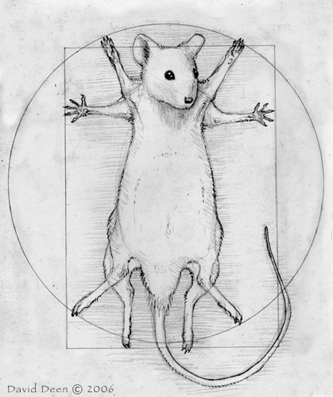
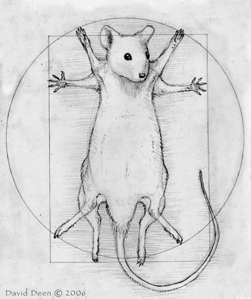

Interactive graphics for teaching
Karl Broman
Biostatistics & Medical Informatics, University of Wisconsin – Madison
kbroman.org
github.com/kbroman
@kwbroman
slides: bit.ly/Bro2014-11b

Biostatistics & Medical Informatics, University of Wisconsin – Madison
kbroman.org
github.com/kbroman
@kwbroman
slides: bit.ly/Bro2014-11b
2

3
 

4
5
6
7
7
8
8
8
8
8
8
9
9

9
9
9
9
9
9
9
9
9
9
9

10
11
12
13
14
15
You just need to learn html, css, svg, and javascript.
And don’t forget .enter()
16
17
blob.attr("x", (d) -> d.x)
height = options?.height ? 500
18
blob.attr("x", (d) -> d.x)
height = options?.height ? 500
18
19
D3 by Mike Bostock
CoffeeScript by Jeremy Ashkenas
D3 tutorials (and book) by Scott Murray
20
21